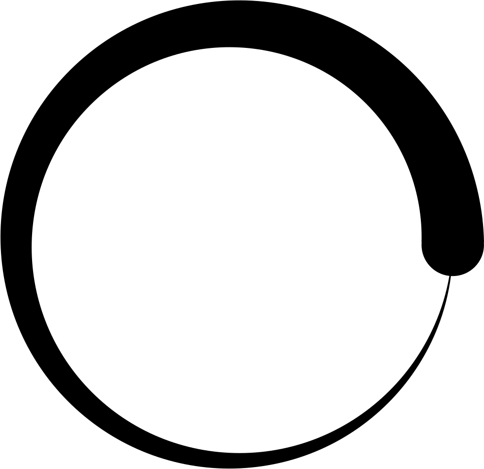

Компьютеры
Смартфоны
Аксессуары

F.A.Q
Зачем нужны компьютерные технологии?
Почему "Новинки компьютерной техники?"
Последние актуальные новости
Способы обнаружить места вашего телефона
Ноутбук Acer Swift Edge 16 Сенсация в мире ноутбуков
Клавиатура Asus ROG Strix Scope II 96. Новинка
Как удалить предустановленные приложения на Android
iKOOLCORE R2: 3-дюймовый мини-ПК с четырьмя 2.5 GbE портами.
5 хороших недорогих процессоров, подойдут даже для игрового ПК